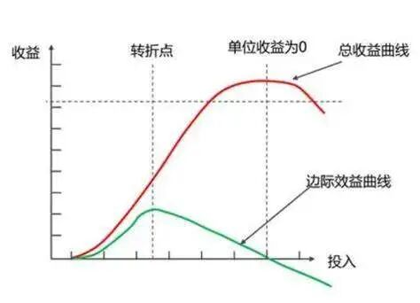
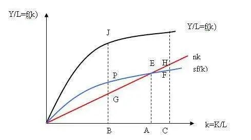

### 题记
上帝为每张嘴都配了两只手和一颗脑袋。
前言
当史前人直立行走并试图用手中的工具创造财富时，人类似乎已经走在探索经济增长的道路上了，只不过增长的力度如此之微弱，盈盈之火在漫长的历程中几乎不见曙光。直到时间来到19世纪，大不列颠岛机器的轰鸣声拉开了工业革命的宏伟序幕，人类的生产力惊人地飞跃，各国以微小差距步入大分流的行列之中，直至200年后，它们呈现出截然不同的经济环境和发展前景。
经济增长是如此重要的话题，它不仅关系到国家的繁荣和人民的福祉，也是衡量社会和文明进步的关键指标。古往今来，经济学家试图从历史观察、数学模拟和理论模型出发，写下了一个又一个经济增长公式。在道格拉斯生产函数中，经济学家把人嵌入生产力方程的“L”中，劳动被视为是生产不可或缺的要素；而在索罗模型中，人的存在稀释了资本和产出存量，是限制经济增长的枷锁。
那么，人在经济增长中扮演了什么样的角色？
马尔萨斯的警示——作为消费单位的人
1798年，一位名叫马尔萨斯的英国牧师洞悉了数千年间人类生活水平几乎毫无改变的真谛，“食物是人类生存所必需的；两性间的情欲是必然的，而且几乎会保持现状。”在他眼中，人口呈指数级增长，食物资源则是算数级增长，这种增长速率的不匹配必然使得人类面临资源短缺的后果，增加的人口总是以饥荒、瘟疫、战争等方式消灭。马尔萨斯的观点被视为一种忧郁的警示：人口增长将持续抵消技术进步带来的经济增长，人们将永久地处于基本生活线上，这一贫困陷阱也被称为“马尔萨斯陷阱”。
图1 托马斯·罗伯特·马尔萨斯
与之遥相呼应的还有哈罗德-多玛模型。尽管哈罗德的生产函数假设中包含劳动，他也并不认为劳动力在经济增长中有莫大的潜力，相反，不断涌现的新资本才是经济增长的源泉，国民储蓄率起决定性作用。因此，节制消费、提高储蓄并用于投资，均衡增长率才能提高，一国的经济增长才能得以持续。
尽管马尔萨斯和哈罗德多玛模型受到了诸多批判，但在当时，经济学家们普遍认同这两个理论的价值。在理解经济增长中人的作用上，它们的观点几乎一致：人是消费的单位，消费即等于消耗资源和减少储蓄，人毋庸置疑成为经济增长中的消耗力量。
劳动创造价值还是稀释资本？——作为生产单位的人
在道格拉斯生产函数中，劳动被抬高到与资本等同的位置，无疑是肯定了人在经济增长中的积极作用。经济家们似乎早有领悟——斯密增长理论的核心正是自由市场和劳动分工，劳动分工使得工人专注于某一任务，促进了专业技能的熟练和生产效率的提升，从而推动了产出的增加和经济的增长。但令人惋惜的是，新古典经济学家指出，劳动是边际产出递减的，人口增长带来的劳动力增加将无法增加与劳动力同量的产出，这种不平衡将引致莫大的产出危机：试想一下，当农民的人数增长2倍并全部投入小麦生产时，增加2倍劳动投入所带来的小麦收成只增加了1.5倍，这些农民的人均小麦产出竟然还下降了！

图2 边际收益递减曲线
20世纪中叶，著名的索罗经济增长模型将这一“稀释”作用解释更加深刻。在索罗模型的推导中，经济增长函数由劳动、资本、技术三者构成，当资本折旧与储蓄转化的新投资平衡时，一个经济体最终会达到稳态。在稳态时，人均产出增长只由技术进步决定、与储蓄率、人口增长率无关。当人口增长速度过快时，即便总产出有所增加，人均资本和人均产出的稳态水平也可能会下降。模型背后的经济意义十分简单易懂，人口增加意味着更多的劳动力需要被分配到有限的生产资源上，每个工人可使用的资本量下降，其产出潜力随之减少，而新增的总产出总是被更多的工人所分配，人均产出不升反降。

图3 索罗经济增长模型
一项20世纪50年代的印度人口研究验证了“资本稀释”的存在，寇尔与胡佛两位人口学家模拟了印度1956-1978 年间各种人口增长率的经济后果——较低的人口增长率对应较快的人均收入增长。进一步研究发现，人口增长引起的资本稀释作用，导致劳动生产率的增长速度减慢，从而“拖累”了经济增长。
在这一篇章中，人是劳动创造价值的生产单位。但是，劳动的边际递减效应与人口增长导致的资本稀释效应，却吊诡地证明了投入生产的个体愈多，反而愈无益于经济增长，即“没有发展的增长”。然而，将劳动简单地视为与资本相互替代的生产要素，本身就抹去了劳动背后关于人的深刻内涵。
人力资本的崛起——作为创新单位的人
索罗的经济增长模型留下了一个未解之谜：既然技术进步是经济增长的源泉，那么技术进步的来源是什么？步入20世纪末，罗默和卢卡斯等人提出的内生增长理论给出最终回答——研发支出和以教育形式存在的人力资本。借助这些变量，人们得以再次审视人在经济增长中的作用。在罗默模型中，以教育和在职培训形式表示的人力资本与劳动者的熟练程度和知识水平挂钩，进一步提高了部门的生产效率和知识存量，新技术接踵而至，经济持续增长。
与此同时，奥地利经济学家熊彼特在《经济发展理论》一书中提出“经济增长=创新=企业家精神”。个人企业家做的就是“创造性破坏”，不断创造出新产品、新技术、新市场、新的原材料和新的组织方式。熊彼特强调，人是创新活动的唯一主体，在经济增长中发挥着尤为重要的作用。
人口增加是如何促进技术进步呢？克莱默模型和盖勒的统一增长理论给出了回答：一方面，人口规模的扩大促进了劳动分工的深化和专业化水平的提高，这有助于新技术的产生；另一方面，更大规模的社会有利于技术、知识的广泛交流与传播，避免技术失传问题。这种效应在工业革命之前尤为明显——人口稠密的地区往往也是技术进步较多的地区。
今日，人口增长仍意味着更多的消费、现有资本的稀释，但随着人力资本的提高和创新活动的增加，技术革命带来经济产出的爆炸性增长，远远高于消耗的资源或稀释的资本。人口增长不再仅仅是数量的扩张，而是质量的提升，是创新潜力的释放。
技术进步、人口增长和经济增长
人在经济增长中扮演了怎么样的角色？过去，经济学家将人看作简单的消耗和稀释的个体；而今天，经济学家们认识到人力资本和创新精神的重要性，它们如同双翼，引领技术和经济振翅翱翔。一个简单的证明是，人均收入自19世纪起呈现出曲棍球杆式的增长。
工业革命前后，最富有的现代经济体比1800年平均富裕10至20倍，韩国、波兰、匈牙利、捷克等从20世纪末到21世纪初成功地从中等收入国家转变为高收入国家，中国的人均收入自改革开放40年后增长了22.8倍，是当之无愧的世界经济增长奇迹。技术进步带来的经济增长不再被抵消了，人均收入绝对性、永久性地迈入了一个更高的台阶。
图4 世界经济增长
为什么马尔萨斯陷阱在今天没有发生？盖勒的统一增长理论或许值得借鉴，他的解释从2个简单的生育决策场景开始：
400 年前，一对小麦种植的夫妇正大喜过望，由于雨水丰沛和光照充足，他们比往年收获了更多的粮食，无需再为衣食温饱而发愁。他们打算再多生育2-4个小孩，以便有更多的劳动力用于未来开垦更多的土地。
400年后的今天，一对夫妇获得了年终奖，他们计划于给儿子新增一项学前教育——是上钢琴兴趣班呢？还是让孩子学习奥数呢？由于教育培训的费用高、父母时间精力有限，这对夫妇打算只养育1个孩子，并致力于将他培养为一名生物科学家。
400年前后呈现出的人口生育决策迥然不同，这是为什么？
盖勒认为，19世纪的工业革命是人类厚积薄发的一个电火花，点燃了技术高速发展的火种。这场技术革命使得生产力空前提升，也对人提出了特殊的要求：劳动力必须在全新且变化极快的环境中游刃有余地学习技能和知识，这一要求将人力资本积累提升到了历史上前所未有的高度。为了适应新环境，人们不约而同地选择了减少生育数量并加强教育投资，完成了“人口大转型”，它标志着人们从传统的高生育率、高死亡率模式转向了低生育率、低死亡率的现代模式，切断了经济增长与生育率之间的正向联系，走向了技术进步与经济增长的正向循环。
当然，女性地位的提升、社会价值观的演变、城市的生活成本等等因素共同决定了人们生育决策的转变，但不可否认的是，19世纪工业革命引发的现代化进程，对劳动力素质的要求进一步提高，既降低了生育意愿，又在创新上引领着经济增长的步伐，技术进步带来的经济增长最终反映在人均收入的提高上，塑造了一个物质生活条件极度丰富的现代社会。
从消费单位到生产单位，再到创新单位，人的价值一步步被看见、被拔高。
相比于将人视为经济增长的枷锁，我更愿意相信，人的创造力为经济增长插上一双翅膀，马克思说过“历史是人创造出来的”，今天，我们当然也可以说，“经济增长是人创造出来的。”
图5 人创造经济增长
参考文献
[^1]戴维·N·韦尔.经济增长[M].金志农等 译.中国人民出版社.
[^2]奥戴德·盖勒.人类之旅—财富与不平等的起源[M].余江 译.中信出版集团.
[^3]戴蒙德.枪炮，病菌与钢铁—人类社会的命运[M].W·W诺顿有限公司 译.上海译文出版社.
[^4]布莱恩·斯诺登 霍华德·文.现代宏观经济学：起源、发展和现状[M]. 余江涛等 译.江苏人民出版社.